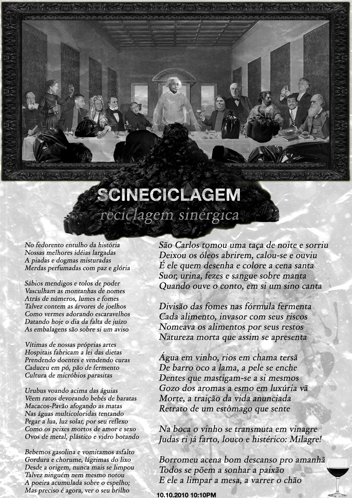

Por f?r!
Publicado originalmente aqui.

Não bastaram todos os livros ou palavras memorizáveis em cantos do peso da moeda (pound's pound), nada que não fosse alegria de viver teve valor maior que seu uso (dever utilitarista). Cultuamos o humano culto, húmus do labor à nau, até ver-lhe as florróidas enciclopêuticas envenenando o sorriso de gesto em fezes cientecníficas. Cultuamos a humilde humanidade em seus cultos de fé na massa da missa (mess games) até que esquecemos que os olhos eram sementes de atos e fizéssemos latifúndios improdutivos de nossas chacras. Nem mesmo notar isto nos adiantou para sorrirmos e empinarmos nossas hélices sem o furor de sermo-nos. Quando postos em resistência à lógica binária, mantivemos sua paridade paraconsistente: Estávamos novamente uns contra os outros e contra nós mesmos. O nível de sucesso de uma conspiração (sub_versão) de qualquer forma é inversamente proporcional às conspirações internas. Mas o sucesso se tornou nosso inimigo também, afinal nós éramos os filhos do império filho do império. Somos contra o amor porque ele é a arma de controle digital dos bons e dos maus, somos contra os bons por nos apiedarmos da maldade em nossa ignorância do que queremos e em nossas abstenções plenas de juízo. Cultuamos a contrariedade contínua de nossos desejos e sensos na sensualidade da alteridade. Somos contra como falamos, quereríamos a novalíngua do polvo. Somos também a imaginação do futuro, sua sombra de luz. Aprendemos, seja lá o que for, mas aprendemos e este é um império sobre os sentidos pela pedagoria. Somos os tiozões de moleques que já pensam como aparelhos, avós de minas que sentem como máquinas. Deste avesso do heroísmo, seres com a pele (religação toque) para dentro d'alma e os órgãos (complexos de estratificação) expostos, quando fazemos algo de bom nos sentimos podres imperialistas do culto à classificação (hierarquia semântica) da linguagem, e quando somos elogiados ou gratificados nos humilhamos como os piores detratores da espécie por nossas horrendas demonstrações de fragilidade. Sempre a ruir contra o sucesso porque não temos mitos ou heróis que tenham sucedido em suceder sem sucumbir aos seus próprios desejos em prol dos outros. E ainda que sabendo disto, não nos ouviríamos em nome de enterrar alguma língua já morta. Fomos programados para ir contra o sucesso de qualquer empreitada, baseados nas premissas da continuidade inequívoca da guerra de todos contra todos. E nas ramificações naturais deste processo nos âmbitos de nossas subvivências: a vã guarda das modas de modos de atuação social do culto digital na cultura de ações e sócios; a competição das competências que embasam o macrocoletivismo denegrindo os afetos imediatos e diretos das microrganizações expontâneas. Negamos o tempo e a duração e por nossa admirável arrogância não queremos nos inserir como possibilidade de alguém que errou-se em si nem tampouco como mais uma escola, parte-ido, seita ou clube. Somos contra heróis, solistas, guerrilhas, os malditos gênios acorrentados como placas de rede slave a depender de suas memórias nas vaidades dos próximos. Temos vergonha de termos tido inspirações e nos chicotearemos mutuamente até que os burrocratas morram de rir em suas mansões. Contra o próximo em nome da ubiqüética. Contra a quantificação dos valores em dígitos cultuamos uma física dos qualia. Contra os complexos de épicos e as simificações côsmicas, contra-dígit forjamos uma syncomplexão e comsimplia. Uma crítica da razão metacrítica repousa no umbigo de todo fazedor de mudos, o que fala. O rolo com-im-pressor agora já imprime impressoras, como se escrevem línguas e programam programadores. Qual o papel do papel? A mão que assina o ato manchada de gangue. A resistência é a geradora da eletrocidade. O estatal é estático, ex-táctil. Somos contra a idealização da loucura e sua institucionalização, a arte; e a idealização do corpo produto e sua mercantilização, a arte. Mas só sabemos ser artistas e talvez de fato o sejamos para além de nossas escolhas e programações. Não bastaram todas as cartas de baralho, amor e amizade dos poetas, o cânone é o canhão nas muralhas do diálogo (a praça púbica). Somos contra a poesia, código do real, quereríamos ler direto na natureza legislada pela matéria. Mas ainda não queremos digitar a contracultura, somos contra o trabalho e achamos a preguiça a única opção contra a entretenimentação do ócio e da vida. Somos contra o diálogo, ligação serial das dúvidas, vírus de sistemas cognitivos. Contra o casal, a ascese, a higiene, a trindade, a suruba da série e o solilóquio da mônada, mas ainda não conseguimos falar todos ao mesmo tempo e nos ouvir em paz e ciência. Quem cala consente, eu não calo (mas sou contra falar na primeira pessoa do singular). Nós almejamos rastros e dejetos. Dig it all! Contra a anarqueologia e o desespero do esquecimento cultuamos a abolição da escritura no dialeto sutil. Evacuamo-nos de qualquer coisa que nos lembre da beleza das pequenas coisas. Contra a publicação, produção e veiculação de mais objetos de consumo cultural para a alienação da própria publicação, produção e veiculação dos processos de produção cultural. E antes de tudo, somos contra estarmos contra tudo. Bla bla amamos contra você.